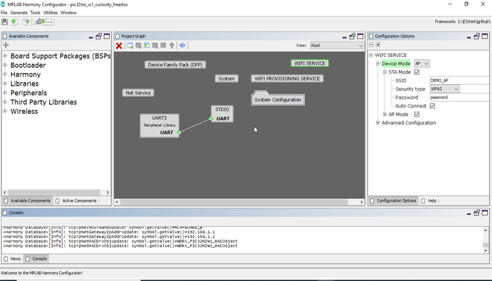
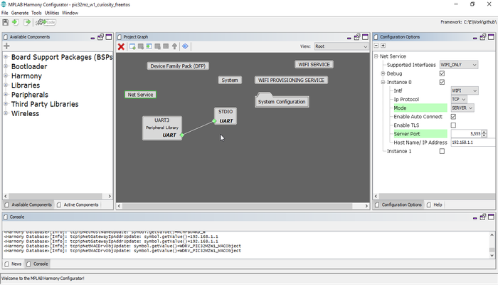

Running the Application
1.Open the project and launch Harmony3 configurator.

2.Currently Net Service is configured to run as TCP Server running on port 5555. In case the user wants to change this config, please make the changes in the Net Service Module as shown below:

- 1.
Currently Net Service is configured to run a TCP Server which awaits connection from a TCP Client on port 5555. In case the user wants to change this config, please make the changes in the Net Service Module configurations as shown below.
4.Save configurations and generate code via MHC
5.Build and program the generated code into the hardware using its IDE
6.Open the Terminal application (Ex.:Tera term) on the computer
7.Connect to the "USB to UART" COM port and configure the serial settings as follows:
- Baud : 115200
- Data : 8 Bits
- Parity : None
- Stop : 1 Bit
- Flow Control : None
8.The device shall come up as SoftAP and then as per the default Net Service configuration, the TCP Server shall come up, awaiting a connection from a TCP Client.
9.Connect a Laptop to the Soft AP (with ssid DEMO_AP_SOFTAP) running on the DUT.
10.Start a TCP Client (python script) on laptop, giving the server IP as the IP of the Board, and the port as 5555: